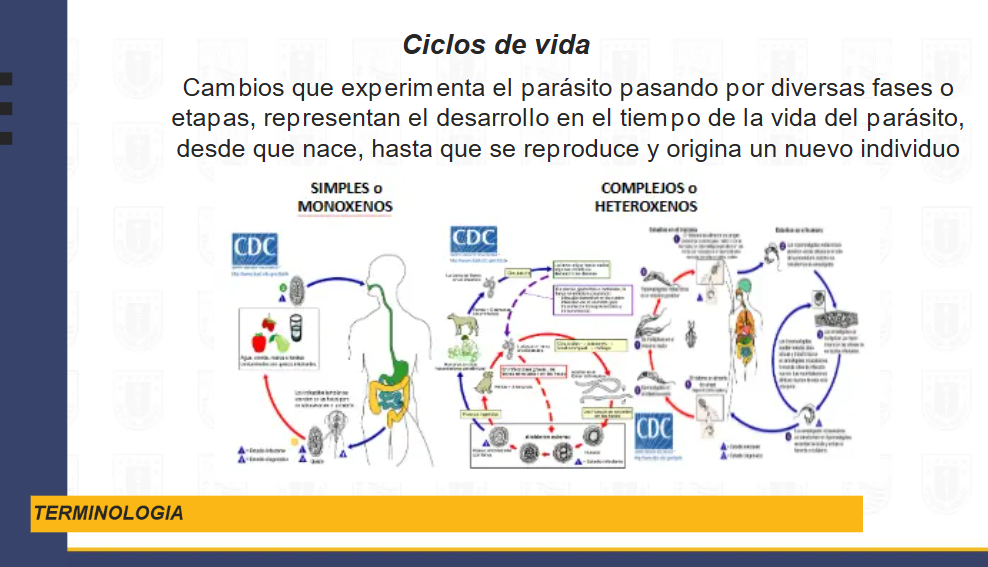
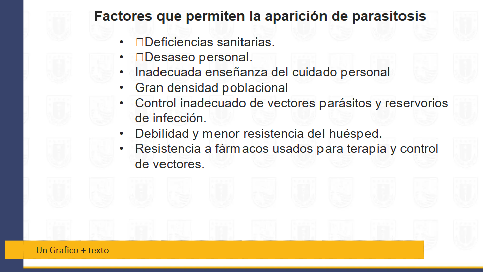

Tema 1 — Generalidades de la Parasitología
Definición de Parasitología
Es una rama de la biología que estudia el fenómeno del parasitismo y la relación de ellos con sus hospedadores y el medio ambiente.
Parasitismo vs Parasitosis
| Parasitismo | Parasitosis |
|---|---|
| Interacción entre 2 individuos donde uno de ellos se beneficia y el otro puede no sufrir daño | Enfermedad infecciosa producida por parásitos (protozoos, artrópodos, helmintos) |
Conceptos Básicos
Mutualismo
El mutualismo es una interacción biológica entre individuos de diferentes especies, en donde ambos se benefician y mejoran su aptitud biológica.
Comensalismo
El comensalismo es una forma de interacción biológica en la que uno de los intervinientes obtiene un beneficio, mientras que el otro no se perjudica ni se beneficia.
Parásito
Cualquier organismo que vive sobre o dentro de otro organismo vivo, del que obtiene todos sus nutrientes, dañando al organismo que lo aloja.
Clasificación de los Parásitos
Según su naturaleza (taxonomía)
- Protozoos
- Amebas (Ejm: *Entamoeba histolytica*)
- Flagelados (Ejm: *Giardia intestinalis*)
- Ciliados (Ejm: *Balantidium coli*)
- Coccidios (Ejm: *Cryptosporidium hominis*)
- Helmintos
- Nematodos (Ejm: *Enterobius*)
- Platelmintos
- Céstodos (Ejm: *Taenia solium*)
- Tremátodos (Ejm: *Fasciola hepática*)
- Artrópodos
- Arácnidos
- Insectos
Según su ubicación en el huésped
- Endoparásitos
- Mesoparásitos
- Ectoparásitos
Endoparásito
Es un parásito que vive en el interior del huésped. A su vez pueden ser:
- Intracelulares
- Extracelulares
Mesoparásitos
Parásitos que poseen una parte de su cuerpo mirando hacia el exterior y otra anclada profundamente en los tejidos de su hospedador.
Ectoparásito
Es el organismo que parasita a otro desde la superficie de este (ej.: piel). Los cuales pueden ser:
- Temporales
- Permanentes
Según su necesidad
Parásito Facultativo
Aquel ser que es de vida libre habitualmente, pero puede parasitar a otro organismo vivo susceptible cuando se dan las condiciones adecuadas. El parásito facultativo puede completar su ciclo de vida sin necesidad de huésped.
Parásito Obligado
Es un organismo que necesita forzosamente de otro para cumplir con sus funciones biológicas; si no encuentra un huésped este parásito muere, ya que únicamente acepta como hospedante a una especie o grupo en particular.
Terminología
Huésped
Se llama huésped, hospedador, hospedante, mesonero y hospedero a aquel organismo que alberga a otro en su interior o que lo porta sobre sí, ya sea en una simbiosis de comensal, mutualista o parasitismo.
Tipos de huésped
Huésped Definitivo
Designa un ser vivo que es imprescindible para el parásito ya que éste desarrollará principalmente su fase adulta en dicho anfitrión.
Huésped Intermediario
Es aquel donde el parásito solo vive una parte de su vida; igualmente imprescindible en el ciclo vital del parásito, donde éste desarrolla alguna o todas las fases larvales o juveniles.
Huésped Paraténico o Errátivo
Es un ser vivo que sirve de refugio temporal y de vehículo para acceder al hospedador definitivo. El parásito no evoluciona en éste y por tanto no es imprescindible para completar el ciclo vital, aunque generalmente aumenta las posibilidades de supervivencia y transmisión.
Reservorio
Hombre, animales, plantas o materia inanimada que contengan parásitos u otros microorganismos que puedan vivir, multiplicarse en ellos y ser fuente de infección para un huésped susceptible.
Vector
Es el organismo, generalmente artrópodo, que transmite al parásito a su huésped vertebrado a través de inoculación o de forma mecánica.
Esquema de transmisión
Reservorio → Vector biológico → El ser humano es infectado
Tipos de Vectores
Vector Biológico
Vector esencial que completa el ciclo de vida del parásito en su organismo; el parásito se multiplica y/o se transforma, lo que asegura la transmisión efectiva y prolongada.
Vector Mecánico
Vector NO esencial para la vida del parásito; transmite de manera mecánica el parásito. Contamina la superficie del vector (patas, tórax, abdomen).
Ciclos de Vida
Cambios que experimenta el parásito pasando por diversas fases o etapas. Representan el desarrollo en el tiempo de la vida del parásito desde que nace, hasta que se reproduce y origina un nuevo individuo.
- Simples o Monoxenos — un solo huésped
- Complejos o Heteroxenos — múltiples huéspedes
Mecanismos de Transmisión de los Parásitos
- Vectorial
- Transfusional
- Transplacentario
- Transplante de órganos
- Carnivorismo
- Contaminación fecal
- Contaminación ambiental
Referencia visual — Mecanismos de transmisión

Factores que permiten la aparición de parasitosis
- Deficiencias sanitarias
- Desaseo personal
- Inadecuada enseñanza del cuidado personal
- Gran densidad poblacional
- Control inadecuado de vectores, parásitos y reservorios de infección
- Debilidad y menor resistencia del huésped
- Resistencia a fármacos usados para terapia y control de vectores
Referencia visual — Factores de riesgo
